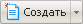

В этом разделе
Форма открывается всякий раз, когда выбирается пункт меню Новая папка в Контекстном меню или нажимается Меню команд кнопки  на Административной панели с выбором команды Создать раздел. Новая папка создаётся в той папке, которая открыта в настоящее время в менеджере. Например, если у вас открыта папка /site2/about/, то новая папка будет добавлена в раздел /site2/about/.
В зависимости от выбора способа создания папки алгоритм действий будет разным. При выборе кнопки на Административной панели откроется Мастер создания папки. При выборе команды Новая папка в Контекстном меню откроется форма Создание нового каталога.
Форма Создание нового каталога
Предназначена для создания новой папки.
Контекстная панель
| Кнопка | Описание |
|---|
| Каталог | Переход в папку, открытую в данный момент в Менеджере файлов. |
| Поле | Описание |
|---|
| Имя папки | Название новой папки. Только латинские символы. |
| Название раздела | Название нового раздела, как он будет показан в цепочке навигации в публичной части. |
| Создать пункт меню | Если опция включена, то ссылка на создаваемый раздел будет добавлена в указанное ниже меню. |
| Меню | Тип меню, в которое должна быть добавлена ссылка на создаваемый раздел. |
| Название пункта | Текст пункта меню, как он будет показан в публичной части сайта. |
| Создать индексную страницу раздела | Если эта опция включена, то сразу же после создания раздела в нем будет создан файл index.php. Это позволит открывать раздел сайта без указания имени страницы. Например: http://yoursite.ru/site2/about/ourdepartment/, - пользователи будут автоматически перенаправляться на индексную страницу раздела. |
| Шаблон | Шаблон, на основе которого будет создана индексная страница. |
| Перейти к редактированию | Если эта опция включена, то после создания раздела откроется редактор файлов, в котором можно будет изменить и наполнить созданную индексную страницу. |
Команды
Команды
| Описание
|
|---|
| Сохранить | Сохранение изменений, переход в папку. |
Применить
| Сохранение изменений, возврат в форму для редактирования
|
| Отменить | Отмена изменений |
Пример создания раздела через форму создания сайта
- Перейдите в менеджер файлов: Настройки > Структура сайта.
- Нажмите кнопку Новая папка на контекстной панели страницы.
- Введите имя папки. Только латинские символы.
- Введите название раздела. Именно это название будет отображено в цепочке навигации в качестве ссылки на созданный раздел.
- Отметьте флажком поле Создать индексную страницу раздела, чтобы добавить в новую папку файл
index.php. При открытии нового раздела сайта в браузере, по умолчанию первой будет показана эта страница.
- Выберите шаблон индексной страницы. В дистрибутив продукта включены следующие шаблоны страниц: Стандартная страница, Включаемая область для страницы или Включаемая область для раздела.
- Шаблон Стандартная страница применяется для всех страниц сайта и представляет собой текстовое сообщение
Text here… без определённого стиля.
- Шаблон Включаемая область для страницы применяется для включаемых областей отдельной страницы сайта.
- Шаблон Включаемая область для раздела применяется при создании включаемой области для всех страниц раздела сайта.
- Отметьте флажком поле Перейти к редактированию, чтобы приступить к редактированию индексной страницы непосредственно после сохранения раздела.
- Отредактируйте страницу по своему усмотрению.
- Нажмите кнопку Сохранить, чтобы сохранить файл в новой папке.
Мастер создания нового раздела
Создание нового раздела выполняется в несколько шагов.
Шаг первый
Собственно создание раздела
Поле
| Описание
|
|---|
| Имя папки | Название папки, только латинские символы! |
Заголовок раздела
| Заголовок раздела как он будет отображаться в структуре сайта
|
| Перейти к редактированию страницы | Открытие для редактирования индексной страницы раздела |
| Добавить пункт меню | Установка флажка приводит к созданию пункта меню с ссылкой на создаваемый раздел. Если флажок снят, то активна кнопка Готово и возможно завершение работы Мастера. Если при снятом флажке работа Мастера продолжается, то второй шаг пропускается.
|
Шаг второй
Настройка пункта меню
Поле
| Описание
|
|---|
| Имя нового пункта | Имя. под которым новый пункт будет отображен в меню |
Тип меню
| Выбор типа меню
|
| Вставить перед пунктом | Выбор месторасположения пункта в меню |
После второго шага возможно завершение работы Мастера.
Шаг третий
Задание свойств раздела
Поле
| Описание
|
|---|
| Описание | Описание раздела |
Ключевые слова
| Ключевые слова для поиска
|
| Разное | Произвольный комментарий |
|
|
После завершения работы Мастера (нажатием на кнопку
Готово) раздел создастся и откроется форма для редактирования индексной страницы.